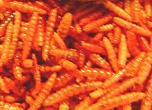
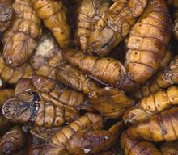

SAFARI
Users
- General & History
- Edible Varieties
General & History
When our first land living ancestors crawled out of the water, insects were the food that allowed them to thrive and adjust to living on land. Cockroaches, which grew to three feet long back then, were particularly important. We ate so many of them they had to get smaller so they could hide, and to this day they scurry away from us.
Much more recently, grubs (insect larvae) were probably a major and fairly easy to find comestible for our pre-human forms in Africa. For certain, insects of various kinds were something we ate regularly.
While the strict Jewish food laws forbid eating creepy-crawlys of any other kind, certain locusts are an exception. Basically this was an "eat them or die" situation after the clouds of locusts ate everything else.
Eating insects became quite common in Mexico, particularly in Hidalgo and Oaxaca states, and also in Central America. Available meats were few and too expensive for the common people, but insects offered a very high amount of easily available protein and fats. This practice has continued, even after the Spanish invasion brought pigs, cattle, goats and sheep, and to the current day.
Today, there are a number of nutrition activists promoting a return to eating insects, as easily produced and sustainable sources of nutrition, with minimal environmental impact. The edible insects are very high in protein and nutritional fats, and also rich sources of vitamins and minerals. These activists also claim they are tasty and can be prepared in many ways.
Actually, everyone eats insects, whether they know it or not. The US FDA (Food and Drug Administration) allows 149 insect fragments per 100 grams (3-1/2 ounces) of wheat flour (but no live insects). For chocolate it's 59 insect parts per 100 grams, and other foods have similar or higher limits. It is simply not possible to eliminate insects from the food supply.
Personally I haven't tried the insects listed below. They are not sold in the markets I shop at here in Los Angeles, and are ridiculously expensive ordered on the Internet. Besides, there's just so much else to eat that I haven't tried yet - but I will soon try the silkworm pupae.
Insects
American Cockroach
[Water Bug (USA); Payplaneta americana]
This winged roach is the bug of choice for cockroach farmers. In China this is a fast growing and very profitable industry. These are actually native to Africa, not America, but they have come to infest much of the world. They grow to an average body length of 1.6 inches and live as long as 2 years, though 1 year is more typical.
A typical cockroach farm has millions of these guys. When they have
grown to maturity, they are vacuumed up and poured into boiling water.
They are then scooped out, drained and set out to dry the same as if
they were chili pods. They are sold mainly to cosmetics and pharmaceutical
firms which grind them up for raw material - though most are a bit
secretive about all this. Some roaches, however, are fried whole and
served with salt as an appetizer.
Photo by Gary Alpert distributed under license
Creative Commons
Attribution-ShareAlike v3.0 unported.
Bamboo Worm
 [Non mai phai (Thai, lit. "bamboo worm"), Rot duan (Thai, lit. "express
train"); Omphisa fuscidentalis]
[Non mai phai (Thai, lit. "bamboo worm"), Rot duan (Thai, lit. "express
train"); Omphisa fuscidentalis]
This moth lays 80 to 130 eggs at the base of a fresh bamboo shoot in
August. The larva hatch and cooperatively bore a hole into the bamboo.
Next they bore an exit hole for when they are adults. Then they start
feeding on the soft pulp inside the bamboo. Strangely, this doesn't
hurt the bamboo, but makes it stronger. These moths live in northern
Thailand, northern Burma, Laos and parts of Yunnan, China, and their
larva are considered a delicacy throughout that region. They are usually
eaten deep fried. The photo specimens have been fried and are set out for
sale in a market in Bangkok, Thailand.
Photo by Charles Haynes (cropped) distributed under license
Creative Commons
Attribution v2.0 Generic.
Chahuis
[Xamoes; rhinoceros beetle; Families Cerambycidae, Scarabaeidae, Melolonthidae, Passalidae]
These are the grubs (larva) of large beetles that feed on the mesquite
trees. About 88 species of beetle grubs are eaten in Mexico. They are
most eaten in the Mexican state of Hidalgo, but also in other states in
the region including Oaxaca. They need to be well toasted or they are
bitter, but, once toasted, are said to taste similar to pork rinds. The
photo specimens, well toasted and for sale in a market in Tula, appeared
to be about 3/4 inch long.
Photo by Helene Combes (cropped) distributed under license
Creative Commons
Attribution Share-Alike v3.0 Unported.
Chapulines
[Grasshoppers Sphenarium purpurascens]
These grasshoppers are much liked in Oaxaca, Mexico, where markets display
heaping baskets of them. They are also eaten in the region around Mexico
City, including Puebla and Hidalgo. This grasshopper also lives in
Guatemala, so is probably eaten there as well. They are available from
May to August. After a thorough cleaning they are roasted on a clay
comal and seasoned with garlic, lime juice and salt flavored with
extract of agave worms. Harvesting these grasshoppers both protects
crops and provides substantial income to farm families.
Photo by Meutia Chaerani / Indradi Soemardjan (cropped)
distributed under license Creative Commons
Attribution Share-Alike v3.0 Unported, attribution required.
Chilocuiles
 [Gusanos rojos. Chinicuiles, Tecoles; Red worms; Comadia redtenbacheri obs. Hypopta agavis]
This is probably the most eaten insect in Mexico, the caterpillar (larva) of a moth. It infests the Maguey plant (Agave americana), the plant from which the distilled alcoholic spirit mezcal is made. Some brands of mezcal contain a worm, usually gusanos rogos, but some use a much less edible worm that is the larva of a weevil, because it's cheaper.
This fleshy worm, which can be up to 2.7 inches long, is highly
nutritious and has been part of the Mexican diet probably for thousands
of years. They are most popular in the central Mexican state of Hidalgo,
a bit north of Mexico City. Sometimes they are eaten alive, but most often
they are fried or braised, seasoned with salt, lime juice and chili
sauce, and rolled up in a tortilla. They are said to taste something
like sunflower seeds, but juicier.
Photo by Bernardo Bolaños distributed under license
Creative Commons
Attribution Share-Alike v3.0 Unported.
Cicadas
 [Family Cicadidae]
[Family Cicadidae]
About 2500 species of Cicadas are known to science, and there are
probably more. They live in tropical and temperate climates and are
widely eaten around the world, including in China, Mexico (particularly
in Hidalgo), Burma and Congo, The photo specimens were deep fried in
Shandong, China,
Photo by Hhaithait (cropped) distributed under license
Creative Commons
Attribution Share-Alike v3.0 Unported.
Crickets
 [Chingrit (Thai)Gryllus bimaculatus, Acheta domesticus,
others]
[Chingrit (Thai)Gryllus bimaculatus, Acheta domesticus,
others]
Crickets are a popular culinary insect in many parts of the world, They
are particularly liked in Thailand and Cambodia, where street vendors
present big metal pans heaped high with fried crickets (Chingreit thot).
The photo specimens are obviously from a fancy restaurant where they
fetch a higher price neatly presented.
Photo by Qazwsx96 (cropped) distributed under license
Creative Commons
Attribution Share-Alike v3.0 Unported.
Giant Water Bug
[Cá cuóng (Viet); Malaeng da, Maeng da (Thai); {Alukap (Ilokano); Obus (Visayan)} (Philippines); Giant toe biter; Lethocerus indicus of family Belostomatidae]
This large insect is usually between 2.6 and 3.1 inches long, but
reported to grow to as long as 5 inches. It is native to South and
Southeast Asia, and southern China. It is a strong flier and swimer, and
preys on frogs, lizzards, turtles and other vertibrates. It kills them
with an injection of powerful toxins. These bugs are popular food items
in Thailand, Vietnam, Laos, and the Philippines.
Details and Cooking.
Photo by Viethavvh at Vietnamese Wikipedia, distributed
under license Creative Commons
Attribution Share-Alike v3.0 Unported attribution required.
Escamoles
[Mexican Caviar; Liometopum apiculatum and Liometopum occidentale]
These are the pupae and larva of a couple of species of ant that build
large nests among the roots of agave plants. In size they are a bit
larger than cooked short grain rice grains, and taste buttery and nutty
with a texture similar to cottage cheese. They are eaten most commonly in
the Mexican state of Hidalgo, a bit north of Mexico City, and in Mexico
City itself. They probably have been eaten there since long before the
time of the Aztecs. The photo specimens were cooked in butter and served
on a plate with a green sauce, tortilla chips and a coarse salsa.
Photo by Cvmontuy, contributed to the Public Domain.
Mealworms
[Tenebrio molitor]
These familiar worms, the larva of a black beetle, are available in most
pet stores, for use in feeding captive reptiles, fish and birds. They are
normally less than 3/4 inch, but growers use juvenile hormones to keep
them from maturing, and they may grow to over 3/4 inch long. The photo
shows mealworms with bok choy and chilis, stir fried and served by a
restaurant in Yunnan, China.
Photo by Candorwien distributed under license Creative
Commons
Attribution Share-Alike v3.0 Unported.
Meocuiles
[Gusano del maguey blanco, Maguey Worm; Aegiale hesperiaris]
This is the caterpillar (larva) of a butterfly called the Tequila Giant Skipper. It infests the plants Agave tequilana and Agave americana), the plants from which the distilled alcoholic spirits Tequila and Mezcal, respectively, are made.
This worm is highly nutritious and has been part of the Mexican
diet, probably for thousands of years. They are eaten most commonly in
Mexican state of Hidalgo, a bit north of Mexico City. The photo
specimens have been cooked and were served on a plate with a green sauce.
Photo borrowed from Osven Food Market.
Mopane Worms
[See Other Names; Gonimbrasia belina]
Millions of the indigenous peoples of Southern Africa depend on these large
moth caterpillars for protein in their diets, but in other parts of the region
they are a popular delicacy or snack. They are picked by hand, mainly by women
and children, and are usually salted and dried. Commercially they are canned
in brine, or with tomato and chili sauce.
Details and Cooking
Silkworm Pupae
 [Tua mai (Thai); Beondegi (Korea); Bombyx mori]
In production of silk, the moth pupa is killed about 2 days before it would emerge, ruining the cocoon. the raw silk is then produced by unwinding the cocoon, leaving the pupa exposed. It can be used in numerous ways, and one of these ways is human food.
This is the one insect that's easy to find in Los Angeles. All the big
Asian markets have foam trays of them in the frozen food cases. They
are also available in cans, but the canned ones need to be soaked in
multiple changes of water to eliminate the off flavor. They are marinated,
then roasted or fried, and sold by street vendors in Korea, China, Japan,
Thailand and India. They are said to taste like raw chestnuts, cooked
soybeans and mushrooms. I will be trying them soon and will report.
Photo by Takeaway distributed under license Creative Commons
Attribution Share-Alike v3.0 Unported.
Stink Bug
[Green Stink Bug; Chinavia hilaris and other species of family Pentatomidae]
The stink bugs are distributed worldwide, and many species are considered crop pests. This is one bug with which I have personal experience, as I didn't see that one had plopped into my wine glass. The flavor was interesting and not unpleasant, but I spit it out because I didn't know they were edible at the time. He was undamaged, though perhaps a little inebriated, so I tossed him back out the window.
This insect is so important in the state of Guerrero, just south of
Mexico City, the town of Taxco has a temple dedicated to it, and on the
first Monday following the Day of the Dead there is a festival in its
honor, presided over by the Señorita dia del Jumil, or
Miss Stink Bug as she would be called here. A green sauce and a chili
sauce are made including roasted stink bugs. Sauces are also made from
them in Southeast Asia, and they are eaten in Africa as well.
Photo by Vik Nanda distributed under license Creative
Commons
Attribution 2.0 Generic.
Witchetty Grub
[Endoxyla leucomochla, other cossid moth species]
These large grubs were one of the most important protein sources for the
aboriginal people of Australia. They feed on roots of
several trees, and can grow to 2-3/4 inches long. Raw, they are said to
taste similar to almonds. Cooked they are crispy on the outside and the
inside becomes a light yellow, similar to scrambled eggs.
Photo by Sputnikcccp distributed under license Creative
Commons
Attribution Share-Alike v3.0 Unported.
Arachnids
Scorpion
[order Scorpiones]
Scorpions are native to every continent except Antarctica, usually in the warmer regions. Of 1752 species only 25 have venom that can kill humans. Deep fried scorpions are common in the night markets of northern China and are eaten in other parts of East and Southeast Asia. They are usually impaled on a bamboo skewer and dipped into hot frying oil. Fried scorpion is said to taste much like a crunchy potato chip, with a tasty liquidy bit in the middle. In Chinese markets vendors usually sell two sizes, big black ones and smaller dark beige ones.
The photo is of an Asian Forest Scorpion (Heterometrus
laoticus). These live in Vietnam and Laos where they grow to 4.7
inches long. Their venom is painful but not life threatening. The South
Asian Forest Scorpion (Heterometrus swammerdami titanicus) of Sri
Lanka and Southern India is one of the largest in the world, growing to
nearly 8 inches long and up to 2 ounces in weight. Its venom is not
powerful because it uses its strong claws to crush its prey rather than
stinging it to death. I don't know if people eat them in that region.
Scorpion venom is very complex and is being extensively studied for
possible pharmaceutical uses.
Photo by Chris huh distributed under license Creative Commons
Attribution-ShareAlike v3.0 unported.
Tarantulas
[A-ping (Khmer); Thai Zebra Tarantula, Edible Tarantula; Haplopelma albostriatum]
Fried tarantulas are a specialty of the Cambodian town of Sukon, but are
also sold in Phnom Penh and other locations in that country. Though
tarantulas have been eaten for more than 100 years we know of, they were
not very popular. How they became popular in Cambodia is a matter of
conjecture, but it may be from severe food shortages during the Khmer
Rouge years. Now they are presented in baskets as a tourist attraction,
selling for about 2002 US $0.08 each. They are very high in protein, and
said to taste like a combination of chicken and cod. They are deep fried
until the contents of the abdomen has congealed to a brown paste,
consisting of internal organs, eggs (females only) and spider poop.
Photo by istolethetv distributed under license Creative
Commons
Attribution 2.0 Generic.
Myriapods
Chinese Red Headed Centipede
[Scolopendra subspinipes mutilans]
Native to East Asia and parts of Australia, these centipedes live in damp environments and grow to about 8 inches long. They have been much in the news lately, because the venom they produce is being researched as superior to morphine for pain control. They have been used in Chinese medicine for centuries.
In Chinese night markets they are threaded onto sticks and deep
fried. They are reported to be slightly bitter and crunchy, without much
substance. Best sprinkled with salt. It is also reported that the legs get
stuck between your teeth.
Photo by Yasunori Koide distributed under license
Creative Commons
Attribution-ShareAlike v3.0 unported.